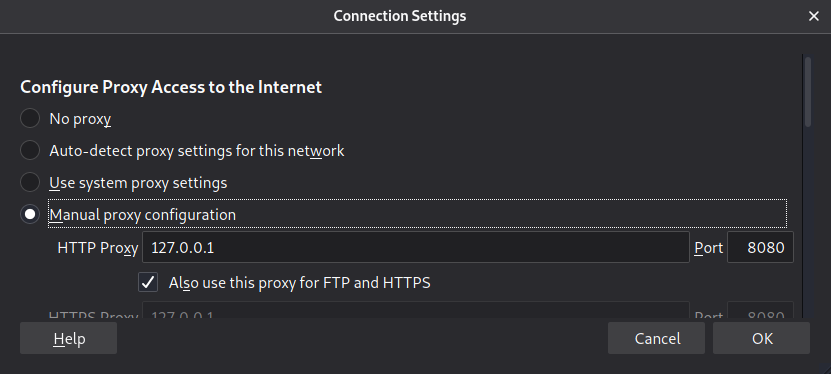
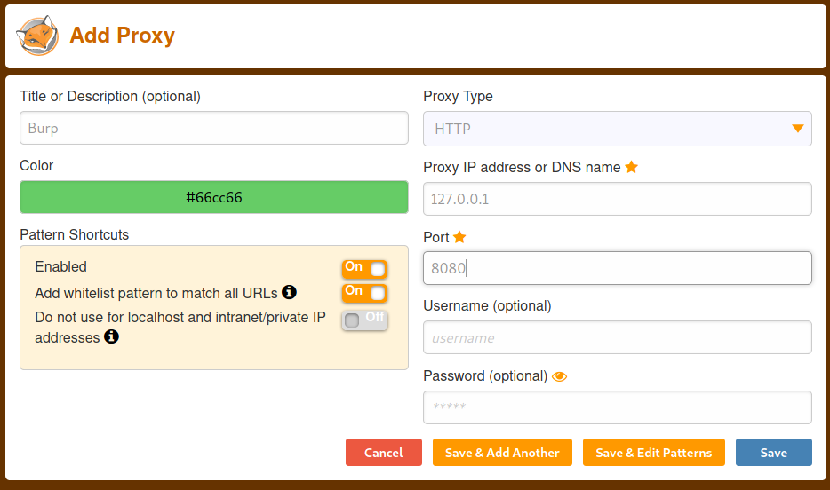

Foxy Proxy
Instead of manually edit network configuration in the Connection Settings on
Firefox:
 we can use an extension
that automatically enable/disable the proxy
Froxy Proxy (
https://addons.mozilla.org/en-US/firefox/addon/foxyproxy-standard/)
Configuration
Options → Add

Enable it →